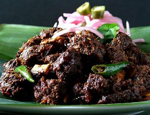
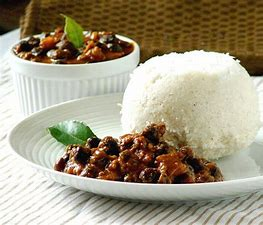
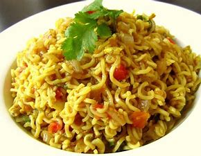
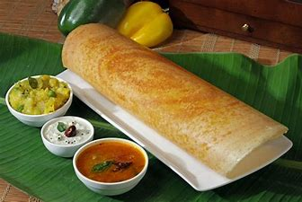

Kerala beef fry is a dish made of beef, slow-roasted in a mixture of spices, onions, curry leaves, and coconut slivers, fried in coconut oil. The dish is also popularly known in Kerala as "Beef Ullarthiyathu".Kerala styl
FOOD LIBRARY

is a dish native to the South Indian states of Kerala, Tamil Nadu, and parts of Karnataka, as well as Northern Province in Sri Lanka. Puttu means "portioned" in Tamil and Malayalam. It is made of steamed cylinders of ground rice layered with coconut.

Maggi is an international brand of seasonings, instant soups, and noodles that originated in Switzerland in the late 19th century. The Maggi company was acquired by Nestlé in 1947.

A dosa is a thin batter-based dish (usually crispy) originating from South India, made from a fermented batter predominantly consisting of lentils and rice. Its main ingredients are rice and black gram, ground together in a fine, smooth batter with a dash of salt, then fermented.

Upma, uppumavu, or uppittu is a dish originating from the Indian subcontinent, most common in Kerala, Andhra Pradesh, Tamil Nadu, Telangana, Karnataka, Maharashtrian, and Sri Lankan Tamil breakfast, cooked as a thick porridge from dry-roasted semolina or coarse rice flour.